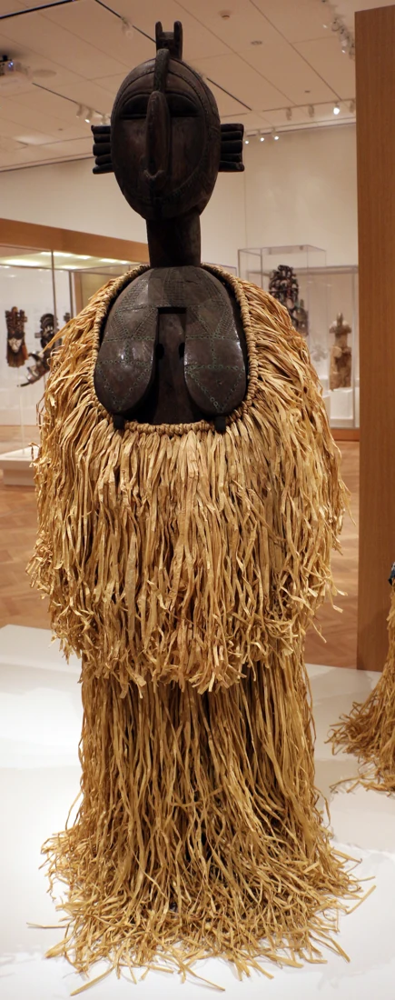

Collection 01 / Guinea
Wear the
story.
From the Baga communities of coastal Guinea, a figure of strength and abundance. A story we carry with us.
FIG. 01 / D’MBA
 From the archiveCoastal Guinea
Photo: Francesco Bini
From the archiveCoastal Guinea
Photo: Francesco Bini
01THE GREAT MOTHERBAGA HERITAGEREPUBLIC OF GUINEA01
01 / The debut collection
The Nimba Collection
The D’mba profile in ink and thread. Discover four pieces from the debut collection.

Sailko
From the archive
“the joy of living and the promise of an abundant harvest”
United Nations NIMBA
NIMBA